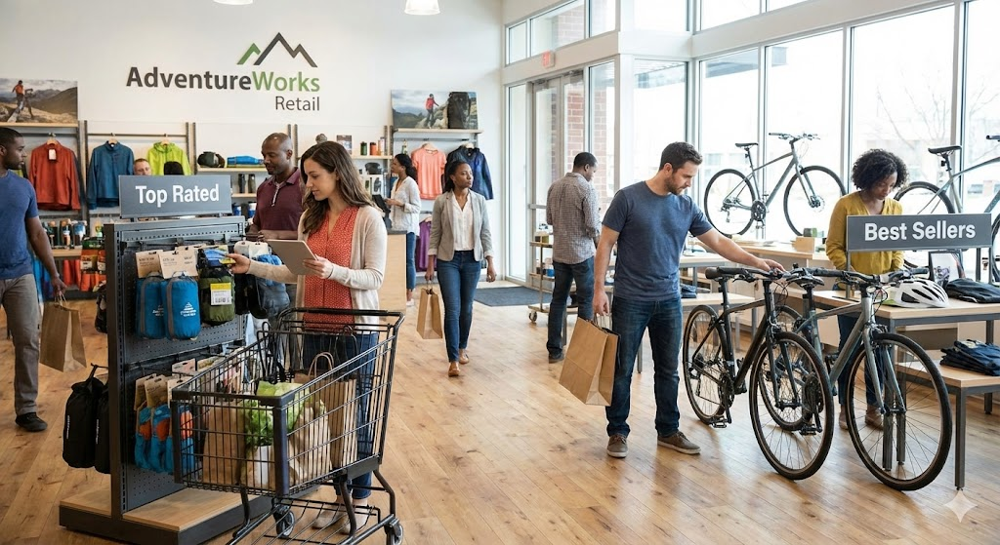

Passionate about leveraging technology to drive strategic decision-making and innovation. With a strong foundation in Information Systems and Data Analysis, I create impactful solutions that contribute to organizational success.

SQL Server
Data Modeling
ETL
Extracted and consolidated relevant data from the AdventureWorks2022 database to create a new "Sales" schema. Key entities include SalesTerritory, SalesPerson, Customer, and Product. Used as a foundation for advanced trend analysis.
Advanced SQL
Window Functions
Aggregation
A deep dive into the Wide World Importers database. This project utilizes advanced SQL techniques including window functions, pivots, and complex aggregations to calculate growth rates, rank customers, and identify top-performing products.
Python
Pandas
Seaborn
Matplotlib
In-depth analysis of SuperStore sales data uncovering insights across profitability, geography, and customer segments. Leveraging Pandas and Seaborn to deliver data-driven recommendations for strategic decision-making.
Python
Data Analysis
Visualization
Analysis of the global AI job market, uncovering trends in compensation, required skills, and remote work adoption. Supports decision-making for employers and job seekers in the evolving AI landscape.
Power BI
DAX
Dashboarding
Interactive dashboard providing a centralized view of Sales, Customer Engagement, Inventory, and HR. Consolidates essential KPIs to support smarter, faster business decisions at every level.
Tableau
HR Analytics
Interactive Viz
Overview of the total workforce with breakdowns by department, location, gender, and age. Features customizable filters to analyze employee distribution and demographics effectively.
Python
BeautifulSoup
Requests
Automation script designed to scrape, clean, and compile historical hockey data. Demonstrates handling multi-page pagination and structuring raw HTML into usable Pandas DataFrames.
Python
BeautifulSoup
Requests
Parses non-tabular HTML structures to extract demographic data (Population, Area, Capital) for 250 countries. Formats unstructured web data into a clean CSV report.